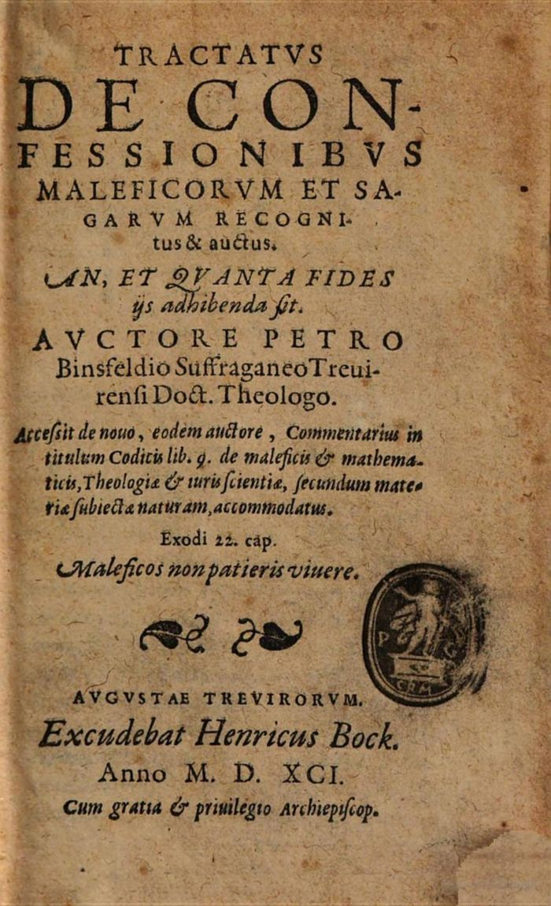
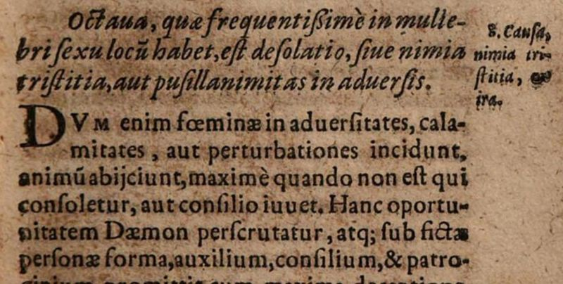
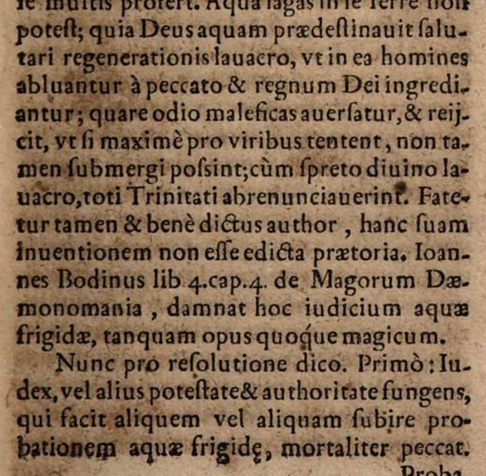
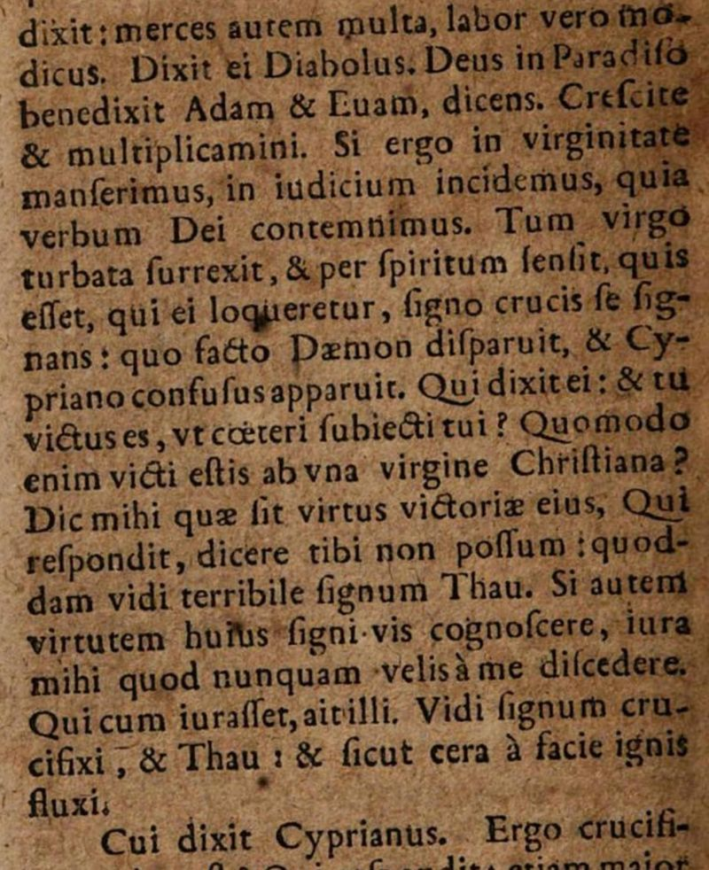

“Desolation, or excessive sadness”: the devil’s way in with women (p. 155)

Latin: Trier 1591, p. 155, scan n188, in a list of the causes that lead people into witchcraft.

The eighth [cause], which occurs most frequently in the female sex, is desolation, or excessive sadness, or faintheartedness in adversity.
For when women fall into adversity, calamity or trouble, they lose heart, above all when there is no one to comfort them or help them with advice. The demon watches for this opportunity and, in a feigned shape, [offers] help, advice and protection …
Original Latin
Octava, quæ frequentissime in muliebri sexu locum habet, est desolatio, sive nimia tristitia, aut pusillanimitas in adversis.
Dum enim fœminæ in adversitates, calamitates, aut perturbationes incidunt, animum abjiciunt, maxime quando non est qui consoletur, aut consilio juvet. Hanc opportunitatem Dæmon perscrutatur, atque sub ficta personæ forma, auxilium, consilium, & patro[cinium …]
Lecky’s note 56 (“Binsfeldius, p. 155”) supports his sentence that “a large proportion of those who were condemned to the flames were women, whose lives had been clouded by some great sorrow”. The second half of his sentence, on the power of music over the possessed, is not on this page.
“Water cannot bear witches”: the cold-water test (pp. 314–315)
Latin: Trier 1591, “Primum dubium: Quid sentiendum de purgatione vel probatione aquae frigidae?”, pp. 314–315, scans n344–n345.
Binsfeld first describes the test as used by “certain judges” in Westphalia and nearby: the suspected witch, bound hand and foot, is thrown into a river or lake; if she floats, she is tortured again; if she sinks, she is acquitted as innocent. He then reports its defender, Wilhelm Adolf Scribonius of Marburg, whose book appeared at the Frankfurt fair in September 1588, against the physicians Johann Ewich and Hermann Neuwalt:

… Since he cannot give natural causes, being refuted by his opponents’ plain arguments, he invents others: a kind of lightness in the devil, by which such bodies are held up so that they do not sink, and a kind of antipathy in the water. To make this fiction understood, I must set out briefly what he puts at length. Water cannot bear witches, because God destined water for the saving bath of regeneration, so that in it men might be washed from sin and enter the kingdom of God; therefore it turns from witches with hatred and rejects them, so that however hard they try they cannot sink, since, despising the divine bath, they have renounced the whole Trinity. Yet the said author admits that this invention of his is no praetor’s edict. Jean Bodin, in book 4, chapter 4 of his Démonomanie, condemns this cold-water trial as itself a magical work.
Now for my resolution. First: a judge, or anyone else exercising power and authority, who makes any man or woman undergo the cold-water test sins mortally.
Original Latin
… Causas vero naturales cum reddere nequeat, utpote qui manifestis adversariorum convincitur argumentis, alias confingit; in diabolo quandam levitatem, qua detinentur hujusmodi corpora, ne submergantur: in aqua vero quandam antipathiam, & ut hoc figmentum intelligatur, ponenda breviter, quæ ipse multis profert. Aqua sagas in se ferre non potest; quia Deus aquam prædestinavit salutari regenerationis lavacro, ut in ea homines abluantur a peccato & regnum Dei ingrediantur; quare odio maleficas aversatur, & reijcit, ut si maxime pro viribus tentent, non tamen submergi possint; cum spreto divino lavacro, toti Trinitati abrenunciaverint. Fatetur tamen & bene dictus author, hanc suam inventionem non esse edicta prætoria. Joannes Bodinus lib. 4. cap. 4. de Magorum Dæmonomania, damnat hoc judicium aquæ frigidæ, tanquam opus quoque magicum.
Nunc pro resolutione dico. Primo: Judex, vel alius potestate & authoritate fungens, qui facit aliquem vel aliquam subire probationem aquæ frigidæ, mortaliter peccat.
Lecky’s ch. III note 3 gives this as the belief behind “the custom of swimming witches”: “everything tainted with diabolical presence was repelled by” water. The page bears him out as a report of what was believed; it is Scribonius’s theory, not Binsfeld’s, and Binsfeld condemns the test outright. See also the Démonomanie page for Bodin.
St Cyprian’s devils and the virgin Justina (pp. 464–467)
Latin: Trier 1591, in the appended Commentarius in titulum Codicis de maleficis et mathematicis (running heads “Comment. in tit. C.” / “De malef. et math.”), pp. 464–467, scans n494–n497. Excerpt from pp. 465–466.
A young pagan, in love with the Christian virgin Justina of Antioch, goes to Cyprian, “then still a magician”, and promises him two talents of gold to win her by sorcery. Cyprian sends a demon, then a stronger one; both are put to flight by the sign of the cross. Then he calls up a superior demon, who promises to bring her:

Then the devil, in the likeness of a virgin, came in to Justina and, sitting on her bed, tempted her, saying: “Today I am sent to you by Christ, to live with you in chastity. But I see you are much worn by abstinence.” The holy virgin said: “The reward is great, and the labour small.” The devil said to her: “God blessed Adam and Eve in Paradise, saying, Increase and multiply. If then we remain in virginity, we shall fall into judgment, because we despise the word of God.” Then the virgin rose up troubled and perceived in the spirit who it was that spoke to her, and signed herself with the sign of the cross; at which the demon vanished and appeared, confounded, before Cyprian. Cyprian said to him: “Are you beaten too, like the rest of your underlings? How were you beaten by one Christian virgin? Tell me the power of her victory.” He answered: “I cannot tell you: I saw a terrible sign, the Tau. But if you want to know the power of that sign, swear to me that you will never leave me.” When Cyprian had sworn, the devil said: “I saw the sign of the Crucified, the Tau, and I melted like wax before the fire.”
Original Latin
Tunc Diabolus in specie virginis ad Justinam intravit, & sedens super lectum ejus eandem tentando dixit: Hodie missa sum a Christo ad te, vivere tecum in castitate: Multum autem te video vexatam abstinentia. Sancta autem virgo dixit: merces autem multa, labor vero modicus. Dixit ei Diabolus: Deus in Paradiso benedixit Adam & Evam, dicens: Crescite & multiplicamini. Si ergo in virginitate manserimus, in judicium incidemus, quia verbum Dei contemnimus. Tum virgo turbata surrexit, & per spiritum sensit, quis esset, qui ei loqueretur, signo crucis se signans: quo facto Dæmon disparuit, & Cypriano confusus apparuit. Qui dixit ei: & tu victus es, ut cæteri subjecti tui? Quomodo enim victi estis ab una virgine Christiana? Dic mihi quæ sit virtus victoriæ ejus. Qui respondit, dicere tibi non possum: quoddam vidi terribile signum Thau. Si autem virtutem hujus signi vis cognoscere, jura mihi quod nunquam velis a me discedere. Qui cum jurasset, ait illi: Vidi signum crucifixi, & Thau: & sicut cera a facie ignis fluxi.
Cyprian then renounces the devil and is converted, and later adds martyrdom to his virtue; Binsfeld ends (p. 467, read in the OCR): “Nicephorus Callistus mentions this story, book 5 of his Ecclesiastical History, chapter 27”, Lecky’s “on the authority of Nicephorus” (note 38). Lecky’s retelling in the text, a maiden assailed by “all the resources of archangelic eloquence” in favour of “a young and noble pagan”, follows this version. The legend is that of Cyprian and Justina.
Further down the rabbit hole
Sources that Lecky cites in the notes next to the ones that cite this page.
- Garinet, Histoire de la Magie en FranceA history of magic in France, from the Frankish kings to the author’s own day
- Hecker, The Epidemics of the Middle AgesThe dancers’ dislike of pointed shoes, misplaced
- Madden, PhantasmataAn Irish doctor’s history of delusions, and the witch-burnings in an Alpine valley
- Tertullian, De baptismoLecky’s two water passages checked against Migne
- Michelet, La SorcièreHow many witches were burnt, and when the last: Michelet gives two answers, and Lecky takes one from each
- Thiers, Traité des SuperstitionsThree papal bulls but no rebellion
Backlinks
Every place in Rationalism in Europe that links to this page (generated automatically when the site is built).